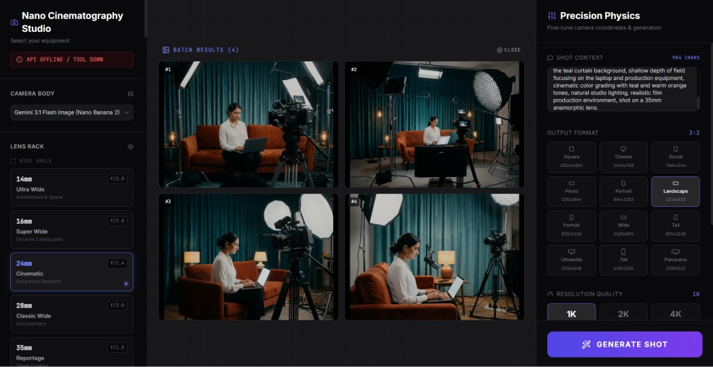
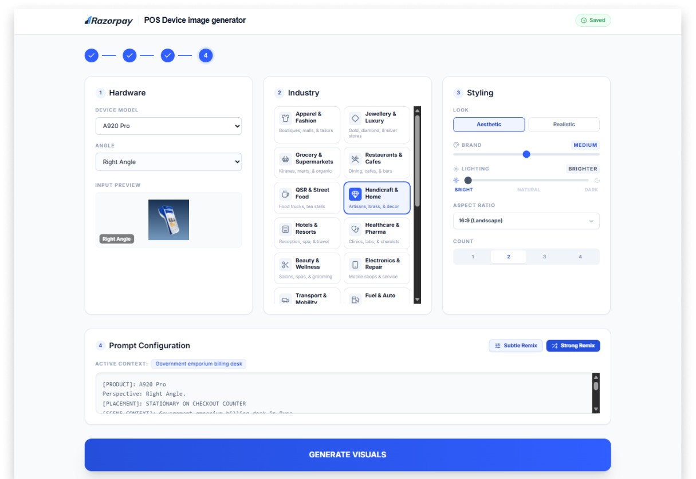
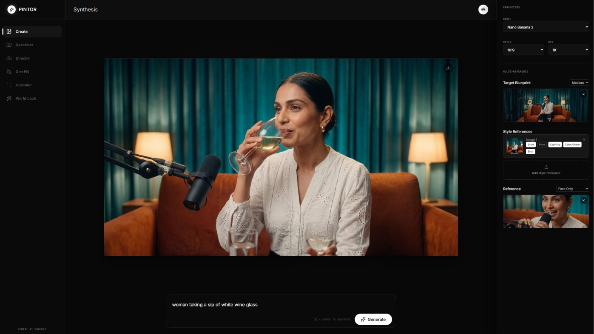
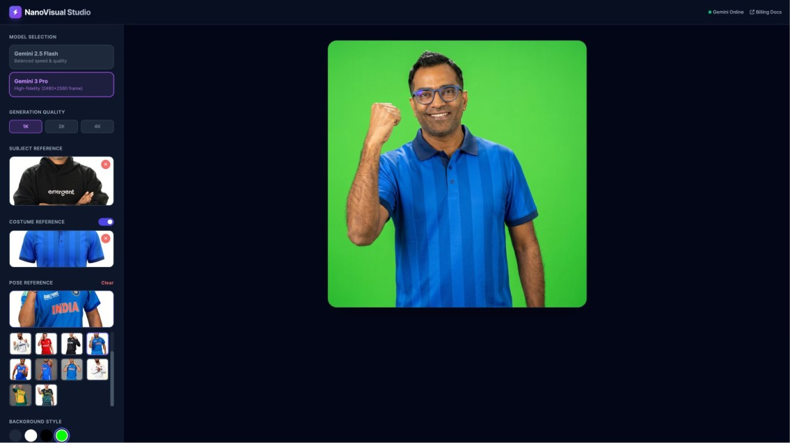
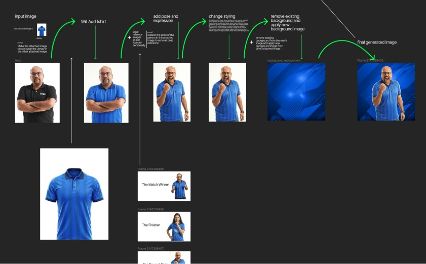

Tools that make the work, built by the people who make the work.
AI is not only a way to make images. Used properly, it lets a design team build its own software: tools for the studio, tools for marketing, and interactive web experiences that designers ship themselves. This is that toolkit, and what it changed.
Principles
- Prompts are inputs. A prompt is one ingredient, not the product. The product is what you wrap around it.
- Tools are modules. Small tools with a single job, each with a proper interface, that can be combined and reused.
- Systems create consistency. Brand, lighting, faces and scenes are held in the tool, so the hundredth output looks like the first.
Automate the set tasks
Work that repeats, such as turning one founder photo into a campaign library or one product shot into a scene, stops being a design request and becomes a button. The designers' time goes to the idea and the finish.
- Founder Image Generator: One photo in, a full campaign library out. 4K, one click.
- Social Content Gen: A founder photo and a business story in, a composed, campaign-ready post out.
Scale up production
When the tool holds the look, volume stops costing quality. The same pipeline that produced 81 television films for 20 founders also produced a newspaper front page and more than 200 social posts, with no cameras, sets or lights.
- Backing India's Start-Up Champions: 81 films, 1 newspaper ad, 200+ social posts.
- Razorbae, AI avatar: Shot once, trained into a system: 129 reels and 6.55 million views.
Easy to learn, even for beginners
A blank prompt box is intimidating. A panel with lenses, lighting, presets and references is not. Wrapping models in clear interfaces gives a beginner a good starting point on day one, and gives the whole team one shared way of working.
- Interfaces, not prompts: Every tool is built with an interface in Gemini Studio, so the controls are visible and the learning curve is short.
- Workshops and mentoring: AI design workshops, talks and one-to-one mentoring for designers starting out.
Designers shipping interactive web, themselves
Campaign sites, landing pages and playable games used to wait in a developer queue. With AI-assisted building, designers take an idea from sketch to a live interactive page, and own the motion, the feel and the details end to end.
- Magic Checkout landing page: An immersive scroll-through world with micro-animations.
- Back in the Ring: A parallax landing page and a playable game.
Built in-house. Used on live campaigns.
Cinematography Tool: For film and ads
A virtual camera department. Pick the lens, set the light, choose the grade, and the scene follows.
- 20+ camera lens simulations
- Advanced lighting control
- 100+ colour grading variations

Product Image Generator: For product marketing
Virtual product photography that keeps the brand together. Drop in a product and get it placed in an environment, lit and composed.
- Infinite variations
- Consistent brand visuals
- No physical shoots required

Advanced Image Editor: For continuity
One scene, many angles, the same faces. Built for the moments where a single hero image is not enough and consistency is the whole job.
- A consistent scene from different angles
- Continuity frames
- Multi-reference generation: scene, style, lighting, colour and face

Founder Image Generator: For campaigns with people
Converts one founder image into multiple visuals across clothing, pose and lighting. It was the engine behind the T20 campaign.
- Transformations across clothing, pose and lighting
- 4K generation in one click
- 20+ founders from a single source photo each

Social Content Gen: For high volume
A high-volume, personalised post creator. Give it a founder image and a business success story; preset combinations of clothing, pose, lighting and background do the rest.
- Input: a founder image and a business story
- Preset clothing, pose, lighting and background
- Fully composed, campaign-ready social posts
